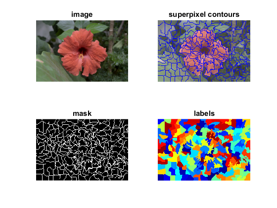

Superpixels demo
This program demonstrates superpixels segmentation using OpenCV classes cv.SuperpixelSEEDS, cv.SuperpixelSLIC, and cv.SuperpixelLSC.
Sources:
Contents
Algorithm
choose one of: 'SEEDS', 'SLIC', 'SLICO', 'MSLIC', 'LSC'
ALG = 'SEEDS';Load image
src = cv.imread(fullfile(mexopencv.root(),'test','test1.png'), 'Color',true); assert(~isempty(src), 'Could not open image'); src = cv.resize(src, 0.5, 0.5, 'Interpolation','Area');
smooth image a bit
if true src = cv.GaussianBlur(src, 'KSize',[3 3]); end
convert to LAB color space
if true converted = cv.cvtColor(src, 'RGB2Lab'); else converted = cv.cvtColor(src, 'BGR2HSV'); end
Create segmentation object
num_superpixels = 300; % SEEDS Number of Superpixels num_levels = 4; % SEEDS Number of Levels prior = 2; % SEEDS Smoothing Prior num_histogram_bins = 5; % SEEDS histogram bins double_step = false; % SEEDS two steps region_size = 20; % SLIC/SLICO/MSLIC/LSC average superpixel size ruler = 15.0; % SLIC/MSLIC smoothness (spatial regularization) ratio = 0.075; % LSC compactness min_element_size = 25; % SLIC/SLICO/MSLIC/LSC minimum component size percentage num_iterations = 10; % Iterations switch ALG case 'SEEDS' superpix = cv.SuperpixelSEEDS(... size(converted), num_superpixels, num_levels, 'Prior',prior, ... 'HistogramBins',num_histogram_bins, 'DoubleStep',double_step); case {'SLIC', 'SLICO', 'MSLIC'} superpix = cv.SuperpixelSLIC(converted, 'Algorithm',ALG, ... 'RegionSize',region_size, 'Ruler',ruler); case 'LSC' superpix = cv.SuperpixelLSC(converted, ... 'RegionSize',region_size, 'Ratio',ratio); otherwise error('Unrecognized algorithm %s', ALG); end
Segment image
tic if strcmp(ALG, 'SEEDS') superpix.iterate(converted, 'NumIterations',num_iterations); else superpix.iterate('NumIterations',num_iterations); % merge small superpixels to neighbouring ones if min_element_size > 0 superpix.enforceLabelConnectivity('MinElementSize',min_element_size); end end npix = superpix.getNumberOfSuperpixels(); fprintf('%s segmentation with %d superpixels\n', ALG, npix); toc
SEEDS segmentation with 176 superpixels Elapsed time is 0.027262 seconds.
get the contours for displaying
mask = superpix.getLabelContourMask('ThickLine',true); zr = false(size(mask)); result = imlincomb(0.8,src, 0.2,255*ones(size(src),'uint8')); result(cat(3,mask,zr,zr)) = 0; result(cat(3,zr,mask,zr)) = 0; result(cat(3,zr,zr,mask)) = 255;
retrieve the segmentation result
labels = superpix.getLabels(); if false % use the last x bits to determine the color. Note that this does not % guarantee that 2 neighboring superpixels have different colors. bits = 2; L = bitand(labels, bitshift(1,bits)-1) * bitshift(1,16-bits); L = double(L) ./ double(max(L(:))); else labels = double(labels) + 1; L = label2rgb(labels, jet(npix), 'k', 'shuffle'); end
Display output
subplot(221), imshow(src), title('image') subplot(222), imshow(result), title('superpixel contours') subplot(223), imshow(mask), title('mask') subplot(224), imshow(L), title('labels')